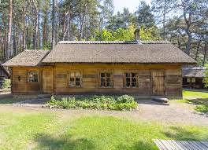

Jurmalas Brivdabas Muzejs
The Jurmala Open-Air Museum is a restored 19th-century fishing village on the Lielupe river bank, with original net houses, wooden boats, fishing equipment and a working blacksmith forge.

About the museum
The museum was founded in 1970 to preserve the buildings and tools of the coastal fishermen who lived along this part of the Gulf of Riga before the resort era. The grounds cover about two hectares and contain a complete homestead — fisherman's house, drying sheds, smokehouse, net house — moved here from the surrounding villages and rebuilt in their original layout.
What to see
- The fisherman's homestead. The main farmhouse is laid out as it would have been in the late 1800s, with the kitchen, bedroom and tools used by a working family.
- Wooden boats. Several original Baltic fishing boats sit in a covered shed, with explanatory boards describing how they were built and used.
- The blacksmith forge. Open and working on Saturday mornings, where you can watch the smith make hooks and nails.
- Net houses. Tall, narrow buildings used to dry fishing nets — almost extinct elsewhere on the Latvian coast.
Visitor reviews
"A beautifully restored fishing village" — Anna B., August 2025
The blacksmith forge is the highlight — they fire it up on Saturday mornings. Well worth two hours.
"Quiet, atmospheric and a nice break from the beach" — Jens K., July 2025
The boats and net houses are original; you really get a sense of what fishing here looked like in the 1800s.
Practical information
- Address
- Tiklu iela 1a, Jurmala, LV-2011
- Phone
- +371 6776 4746
- Open
- Wed–Sun 10:00–18:00 (May to September)
- Closed
- October to April
- Nearest station
- Lielupe (suburban train)